Software Nero2.1 · manual updated 4 November 2026
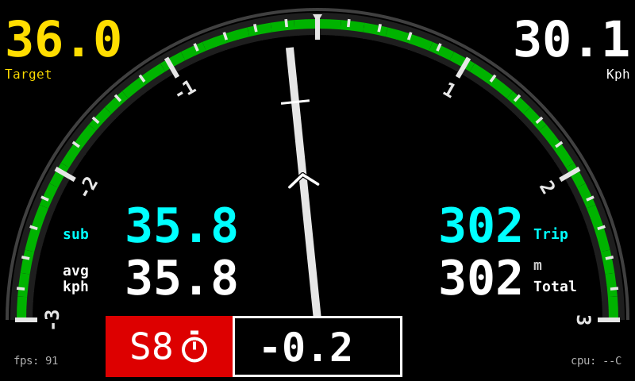
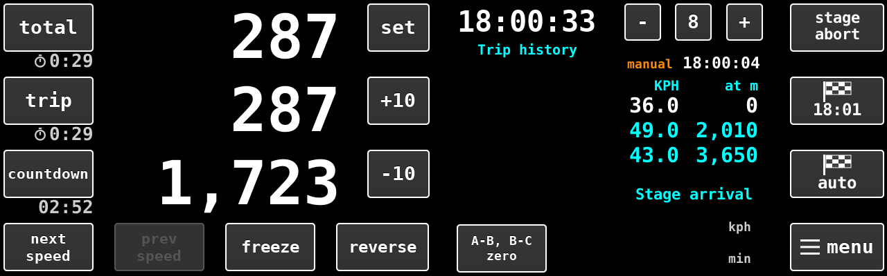
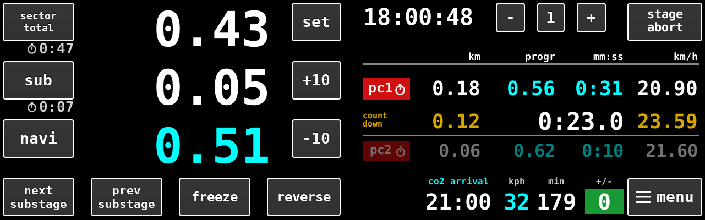
The box has been designed to work with the rallies having various characteristics and operates slightly differently depending on the type of rally selected.
| Rally type | Characteristics | In this manual |
|---|---|---|
| greek |
| Programming, Starting, Navigating |
| italian |
| Programming, Starting, Navigating |
| surrey |
| Programming, Starting, Navigating |
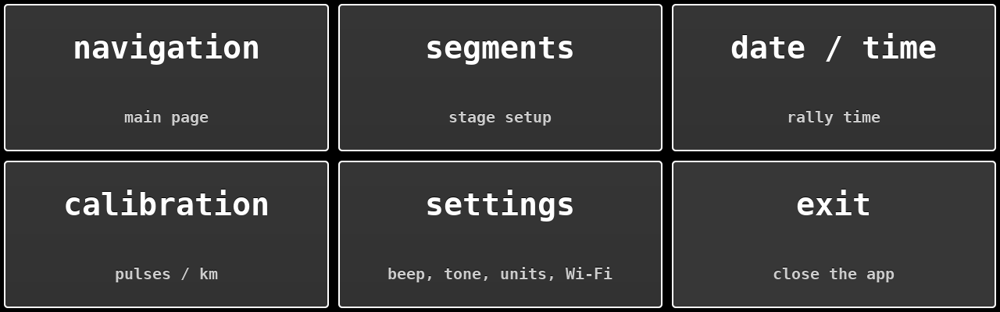
Every page has a menu key at the bottom right. Press it to reach the main menu.
Numbers are typed on the on-screen keypad: C clears a selected entry and the
arrow key deletes one character. There is no Enter key: an entry is saved automatically when you tap another box
or after no activity for a second.
Characteristics of greek rallies
Select greek rally type from the settings page and then select segments from the
main menu.
The segments page will display a Greek flag.
The system defaults to metres
but can be set to KM in settings.
When entering stage data you can choose to enter every roadbook box in the stage, or only those rows with speed changes. With every box entered, Beep Assist navigation (when on) beeps ahead of each box.
add distance and type the cumulative distance at which each
row ends, separated by semicolons: 540;1320;2010 (or 0.54;1.32;2.01 in
km). Later entries are appended or inserted as needed. Distances are separated by a semicolon only:
a comma is refused with a warning, and in metres a decimal point is refused too (whole metres only). The
add distance key shows the unit in use on its second line, and the grey example in the box follows it.add distance and the distances will be added to the summary table.next speed on the navigation page.
The first row has no auto tick.Entries save automatically under the stage number shown. A running stage cannot be edited.
The roadbook ends you type are kept as typed. Setting the start figure (from) afterwards only shortens or lengthens the first row; it does not move the other ends, and typing the first end never wipes a start already set. A start that is not before the first end is refused.
Uploading stages
upload stage on the phone's Segment page opens a window showing the CSV columns required for
greek, surrey and italian rallies. Choose the CSV, or paste it into the box, then
press check and load. If a stage is already programmed it asks for confirmation before it
is replaced. The same key on the box opens a file window and loads that file. It is greyed while a stage is running.
In the CSV, units is m, km or miles – the unit of every distance in the file.
auto y on a row with a new speed changes to that speed by itself when the row starts; a blank waits for
next speed. Once a file is loaded the Segments page shows the first stage loaded.
clear stage empties the stage shown; clear all empties every stage.
Both ask for confirmation first.
A stage can be started via preprogrammed autostart (using the time programmed on the Segments page), or by pressing the Start Now or Start On Next Minute
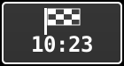
buttons.Autostart: When autostart is armed the button
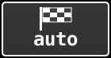
will appear as black on white, and the word auto (cyan) appears next to the start time. When Autostart is not armed the word manual (orange) appears. A start time that has passed, with nothing armed or running, is crossed out in red. Autostart can be toggled on/off using the Autostart button on the navigation display.What happens with autostart:
Start on Next Minute: The Start on Next Minute button constantly updates to show the next whole minute. Pressing it sets a type of autostart at that minute.
What happens with Start on Next Minute:
Start Now: Pressing it starts a stage immediately.
What happens with Start Now:
Regular on-schedule start – in most instances this will be handled correctly by a pre-programmed autostart which resets the distances and timer at the allotted start time.
Late arrival at start – there are 2 ways to handle this scenario.
Obstructed start – if traffic or road conditions may make you late to the first timing point, press the next-minute start key (flag with a time) on the start line instead of using autostart, and move off shortly before departure. Total and Trip reset when pressed; timing starts at the minute.
The total button controls the Distance and elapsed time since the start. Press to zero the distance.
Shows intermediate distance and time. Press to zero it. Prior figures appear in the Trip history column. Trip also restarts at every speed change, and at every roadbook box that carries on at the same speed. The cyan sub average on the driver display does not restart at those same-speed boxes; it restarts only at a speed change. Starting a Greek stage clears the trip.
The distance and time to the next speed change are displayed next to the button. The button cannot be pressed. When there is no later speed change, the distance counts down to the finish and the time is left blank.
next speed is used to move to the next programmed speed manually. The current speed is displayed in white in the stage panel. prev speed undoes
the last speed change and the box recalculates the data as if the speed change had not taken place. Pressed late, even after
the roadbook point, it still puts the earlier speed back and the box waits for next speed again. Both buttons override previous manual and automated speed changes.
+10 / -10 increment all the distance counters 10 m per press (0.01 mile per press, shown as +.01 / -.01, when Distance units is miles); -10 cannot take a counter below zero; set allows a
precise distance to be entered for Total (and Trip remains unchanged). During a stage, corrections apply across
average speeds and timing errors.
Pressing freeze stops the distances from incrementing; pressing freeze again starts the distance incrementing from the frozen figures. Clocks and timers continue to increment while frozen – use it after a navigation error.
reverse makes Total and Trip (as well as countdown) increment backwards. It is typically used when reversing after overshooting a junction as the box cannot determine the direction of travel. With reverse pressed the distances can become negative.
Freeze overrules Reverse if both are pressed. The buttons display as black on white when active and a whooping sound is emitted.
Where a rally is measured on an AB, BC basis and this option has been selected in settings, the
A-B, B-C zero button appears under the Trip history in the navigation window. Pressing this during a stage when a
timing mark or timing marshal is seen sets the timing error in the driver's display to zero and
the average speed calculation is made independently between each timing mark.
The popup shows the current error size to be removed and the adjustment already applied.
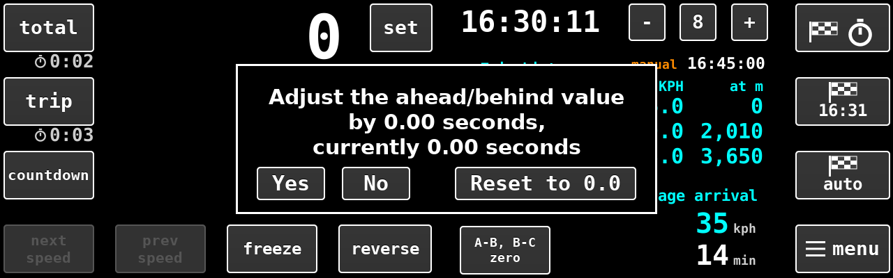
Yes zeroes the needle at this instant.Reset to 0.0 removes the adjustment so the true error shows.No does not make and changes and returns the box to the navigation screen.The stage panel shows the selected stage, the start time of the stage and autostart status, the distances at which speed changes commence (the current segment is shown in white) and the speed needed (and allotted time) to reach the next stage with 1 minute to spare.
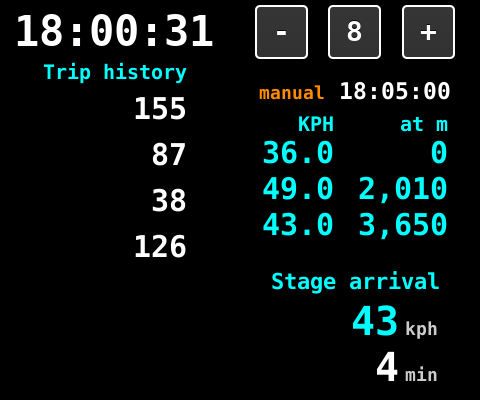
Characteristics of italian rallies
Italian rallies have many short back-to-back timed trials without a pause between them so each time-control section is programmed as linked substages.
The substage types:
| Type | What it is | How the box treats it |
|---|---|---|
| navi (grey) | Untimed driving between controls. | A suggested speed is worked out from the sector's total duration on order that the car arrives at the final time control in the correct mminute |
| pc (red, stopwatch) | A imed trial between two pressure tubes. | Speed is worked out from the subsector's duration (not distance). |
| pm (yellow) | An average speed check with unknown timing points. | Duration is worked out from the given speed (not the elapsed time). |
| ct (blue) | A substage ending with a Stamp check | Untimed, like navi. |
| co (green) | A substage that ends with a time control ending the sector; scheduled arrival within a minute. | This the last row of the sector. The arrival time is worked out from the card. |
Select italian rally from the settings page and then select segments from the
main menu. The segments page will display an Italian flag. Choosing the
italian rally type does not change the distance units: for Italian sectors set Distance units to km
(two decimals) in settings.
Enter every substage on the organiser's Times and Distance Table (TDT) starting from the row after the opening time control, up to and including the closing time control (here co 2). The opening time control (co) line is not entered where it has zero distance (0.00 km).
add distance and enter the cumulative distances (progr) at
which each substage ends either one at a time or enter several separated by semicolons. (eg 1.20;1.38;1.44;6.80;9.20;15.60;18.40
(or 1200;1380;1440;6800;9200;15600;18400 in metres)). Subsequent entries are appended or
inserted as needed; take care when inserting a distance inside an existing pc or pm which will get recalculated.add distance.Figures which can be edited are displayed in dark boxes; figures which are calculated and cannot be edited have grey boxes in the segments table. Entries are saved automatically. A running sector cannot be edited.
upload stage on the phone's Seg page opens a window. It shows the CSV columns required for
greek, surrey and italian stage types, and marks the one this box is using. Choose the CSV, (or paste it into the box if using the phone app), then
press check and load. A stage that is already programmed asks before it
is replaced. The button is greyed while a stage is running.
clear stage empties the sector shown; clear all empties every sector.
Both ask for confirmation first.
A sector is started at the time control by pressing the start now button
during the departure minute. The sector clock starts at the second you press, and the arrival target becomes that same second plus the card's sector duration. Sector total and sub distances zero; navi distance does not zero automatically. The stage now key reads stage abort when a sector is in progress. The box will start in the first substage.
next substage to enter the following substage (pc, pm etc). NB that this sets the
sector total distance counter to the total distance on the card's progr entry. The navi
distance increments independently – any variation will give a guide to calibration errors as
long as Navi is not reset.next substage is pressed early or by mistake press prev substage to undo it.At the final substage.
On arrival at the final time control (co) pressing next substage will end the sector. It will warn and ask for confirmation and if confirmed will end the sector and increment the sector selector to the next sector.
Distance and elapsed time in the sector, matching the card's progr value. Press to zero it outside a sector.
next pins it to the card's
figure; correct it by hand with set, and take back a wrong press with prev.
The phone behaves the same.Distance in the current substage; zeroes at every new substage when next substage
is pressed. Press to zero; inside a pc or pm it asks first (In stage / Reset sub now?, with
RESET SUB or Back), as sector total does. The phone asks too.
An independent distance counter, shown in cyan. Press to change the distance. A popup offers the option to reset or specify the distance.
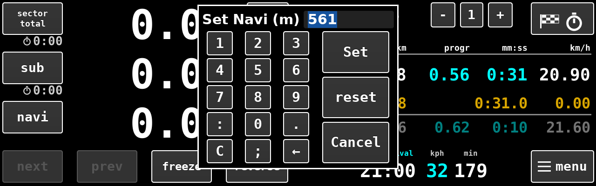
next substage is pressed to move to the next substage. prev substage
undoes the change.
+10 / -10 increment all the distance counters (sector total, sub and navi) 10 m per press; -10 cannot take a counter below zero;
set allows a precise distance to be entered for sector total.
Pressing freeze stops the distances from incrementing; pressing freeze again starts the distance incrementing from the frozen figures. Clocks and timers continue to increment while frozen – use it after a navigation error.
reverse makes Total and Trip (as well as countdown) increment backwards. It is typically used when reversing after overshooting a junction as the box cannot determine the direction of travel. With reverse pressed the distances can become negative.
Freeze overrules Reverse if both are pressed. The buttons display as black on white when active and a whooping sound is emitted.
The count down time to the end of the substage is displayed in large white characters. Past the end of a substage, the count down distance (for example
+0.04) and seconds (for example +0:01.4) turn red and count upwards.
Characteristics of surrey rallies
Surrey works as greek except as noted here.
| greek | surrey | |
|---|---|---|
| Readouts | total, trip and countdown | total, trip and stage. Total is the roadbook's running distance and is not zeroed at a stage start. Stage is the distance since Start Now was pressed. The countdown moves to the stage column. |
| Stage start | At a set time (autostart) or with Start Now. | With Start Now, pressed at the landmark. Autostart still works if a start time is entered. |
| Speed changes | At the row distance, by auto or next speed. | The same, at the roadbook total of the box. |
| Stage end | On distance, or with next speed on the last row. | With next speed,
pressed at the finish landmark. On distance if it is not pressed. |
| Result | Ahead / behind. | Ahead / behind while driving, then the time taken
(9:20.6). |
Select surrey rally type from the settings page and then select segments from the
main menu.
The segments page will display a Union Jack.
The page is otherwise the same as in Programming Greek Stages.
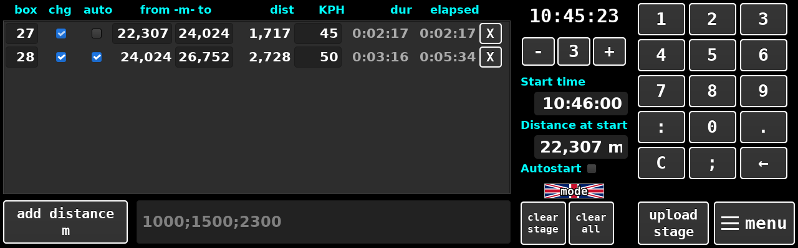
Stage data is entered in the same way as for greek, with the following differences.
upload stage, clear stage and clear all work in the same way as for greek.
A surrey stage is started by pressing the Start Now button as the car passes the start landmark. Autostart still works if a start time has been entered on the Segments page.
Before the start: Total must show the roadbook distance.
total to zero it where the roadbook restarts (box 1, box 66).set to enter the roadbook's figure at the start box.What happens with Start Now:
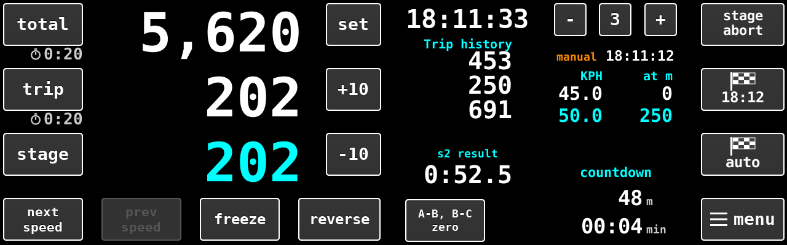
The total button shows the roadbook's running distance.
Shows intermediate distance and time, as in greek. The last four figures appear in the Trip history column.
Shows the distance since Start Now was pressed, in cyan. It shows dashes when no stage is on the gauge. It cannot be set.
During a stage the distance and time to the next speed change (or to the finish) are displayed at the foot of the stage column. Between stages, Stage arrival is shown there instead. Each figure sits above its legend.
set allows the roadbook's figure to be entered for Total. Use it at any roadbook box where Total has drifted.
During a stage, set moves Total and the stage distance together.
Speed changes happen automatically at each roadbook box. next speed and prev speed work in
the same way as for greek.
A Surrey stage ends only when next speed is pressed on the last row (the finish landmark) or the stage is aborted; it never ends
on distance. The stage ends and the time taken is displayed
under the Trip history and on the phone. It is shown as s2 result (the stage number in place of 2), and stays until the next stage finishes.
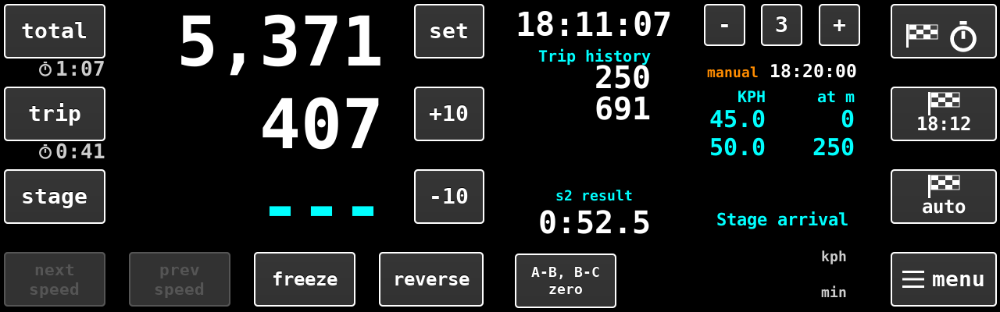
A-B, B-C zero is available in the same way as for greek.The driver display has two designs in Greek/Surrey mode - one for navigation and one in a stage.
With no stage running there is no needle. The top left shows the arrival speed: the speed needed to reach the next stage with a minute to spare. The distances and averages are Trip and Total.
The stage display differs where marked.
During a timed stage the needle shows how far ahead/behind the driver is in seconds. If the error exceeds the current gauge scale (changeable from 1–3 seconds in settings) the needle will stay pinned far left (or far right if ahead) and the scale will expand. The red logo shows the stage number (S1, S2 …). The cyan sub average is your average speed since the last speed change. It restarts at each speed change, so it corresponds with the time error; the white average is the average since the total counter started.
The chevron slides up the needle to visually represent the impending end to the current programmed segment row which has been programmed (and may include navigations, speed changes and the finish line). At the start of each row it sits 20% of the way up the needle; as the row is driven it slides up toward the horizontal row end line, arriving as the row ends. It moves with the row's scheduled time, not the distance driven, so a car that is early or late will reach the end of the row before or after the chevron reaches the line.
While an autostart is pending, a T- hh:mm:ss countdown shows mid-display with
Early Departure ENABLED or DISABLED beneath, depending on whether a regular autostart
or a start on next minute is triggered.
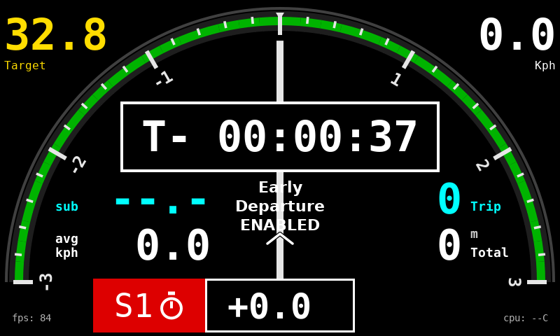
The driver display has two designs in Italian mode - one for untimed/navigation substages and one for timed (pc & pm) substages.
The display is similar to those for greek/surrey rallies except the right-hand box shows the minutes in hand to the control arrival minutes: green when ahead, red when behind.
The substage time shows the time still left in the substage. Once past the line it counts up, with a leading +. There is no needle or chevron on these rows.
Due to the short nature of many timed stages, and the increased timing accuracy in Italian stages, the chevron only moves in the last 5 seconds of the stage to visually count down to the end.
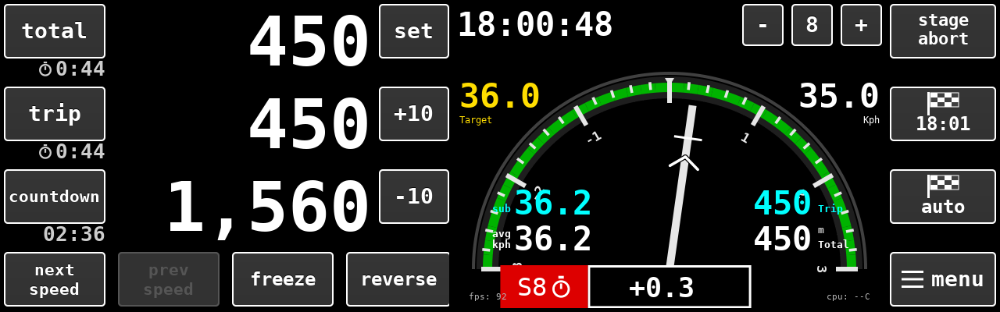
With Force single display switched on, the driver's gauge shares the co-pilot screen. The keys work in the same way as on the navigation page.
set, +10 and
-10, in that order.next speed, prev speed, freeze and reverse.menu.There is no A-B, B-C zero key in single-display mode, and no Trip history or stage table.
Other pages are reached through menu. When a start is pending its countdown is shown over the gauge.
The phone app works within a phone browser window if the box and phone are on the same network. The box or a phone can be set as the hub. The advantage of using the box as the hub is that multiple devices can be used as displays and it has proven reliable in testing. The disadvantage is that connected phones lose their network connection. The advantage of using the phone as the hub is that it can continue to synch its clock and receive messages, however, multiple wireless screens cannot be attached and when using an iPhone the system will not reconnect automatically if the phone ever loses reception (which is frequent in remote parts).
Connect the phone app to the box using the instructions on the settings page and navigate to the displayed browser address. The page will load more cleanly if the web page is saved to the home screen as this disables tabbed browsing. All box features are mirrored on the phone. In landscape views mirror the box display as closely as possible; in portrait the displays are redesigned to fit the screen.
A question window that is open on the box (such as abort stage, or a reset) also appears on the phone, and either device can answer it.
Navi
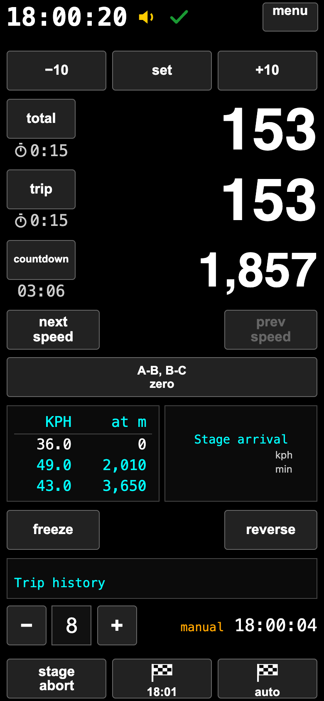
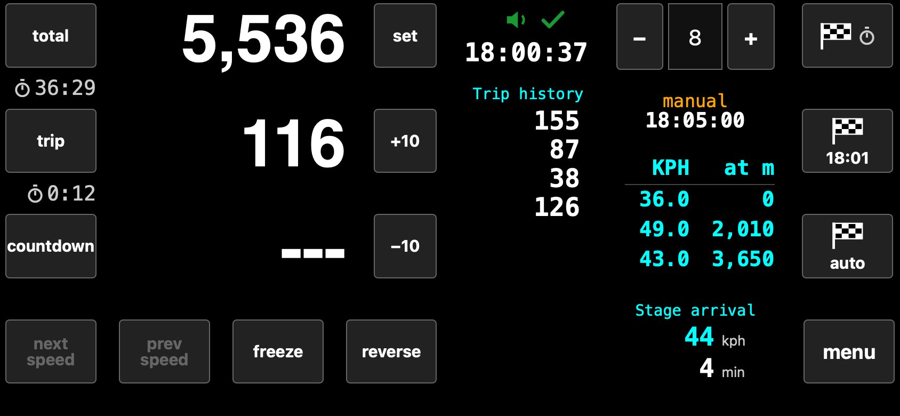
Drv
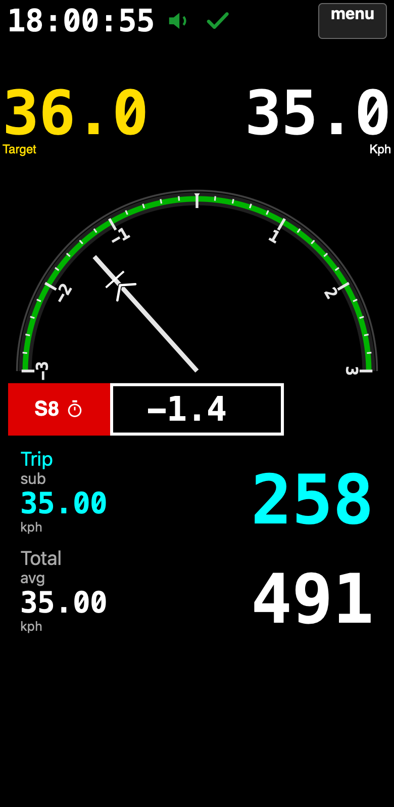
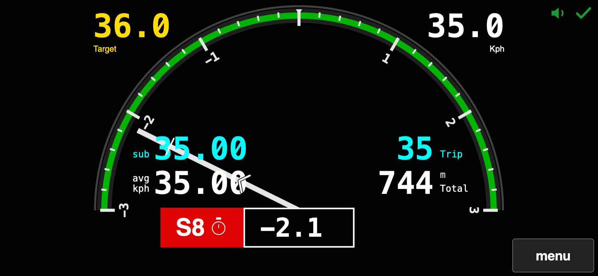
Seg
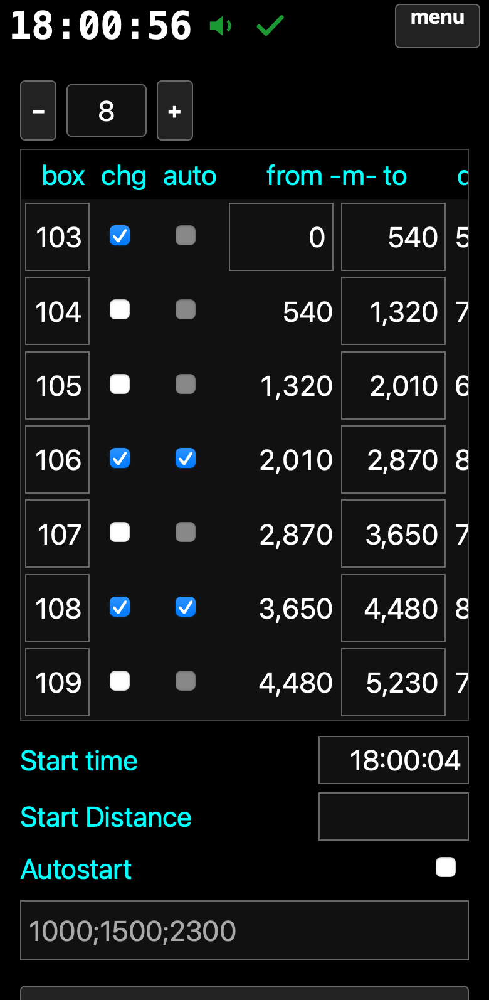
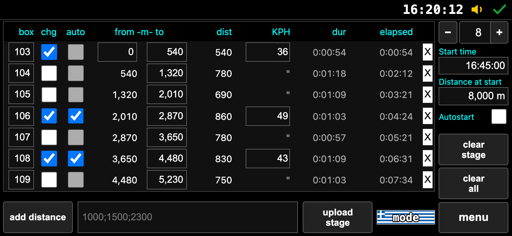
Set
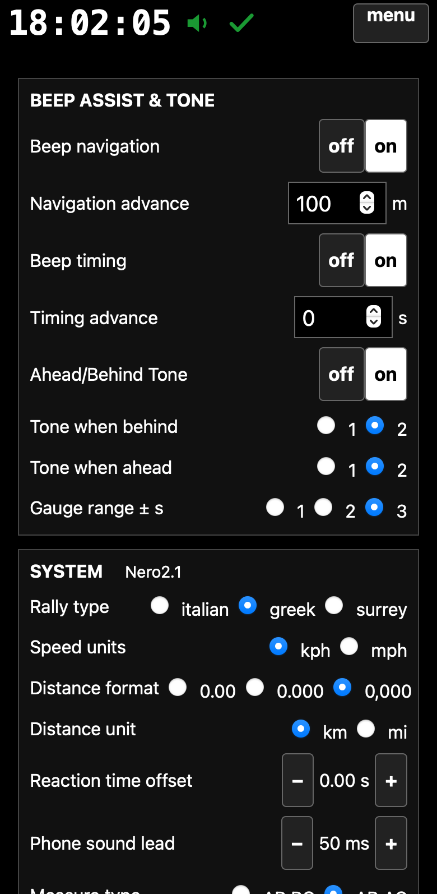
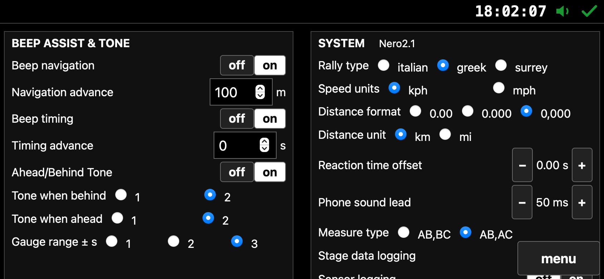
Time
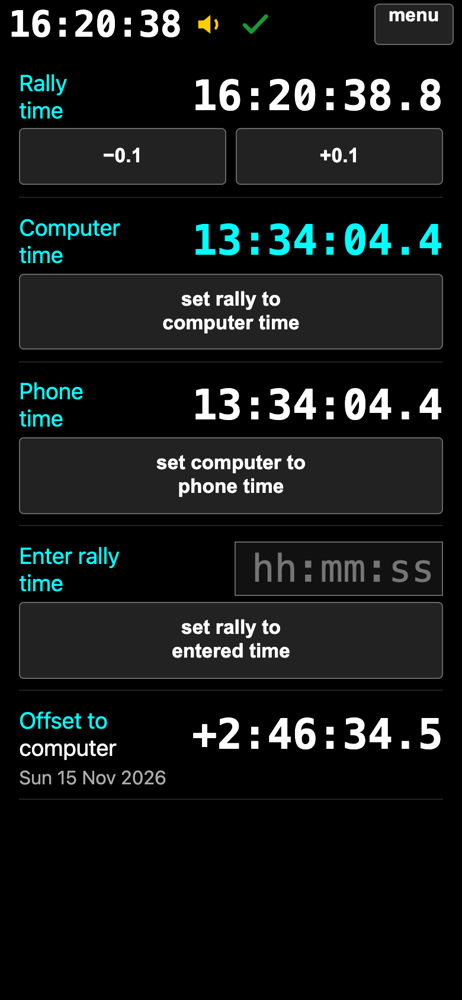
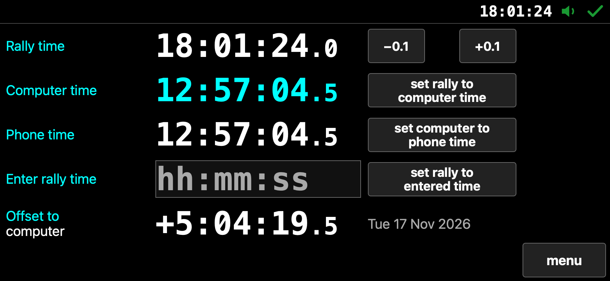
Cal
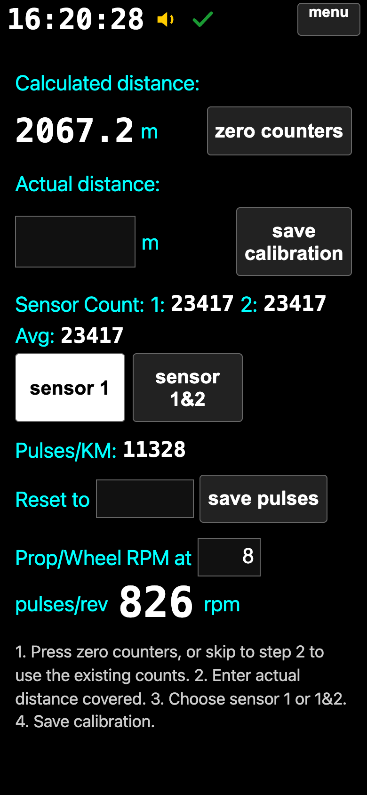
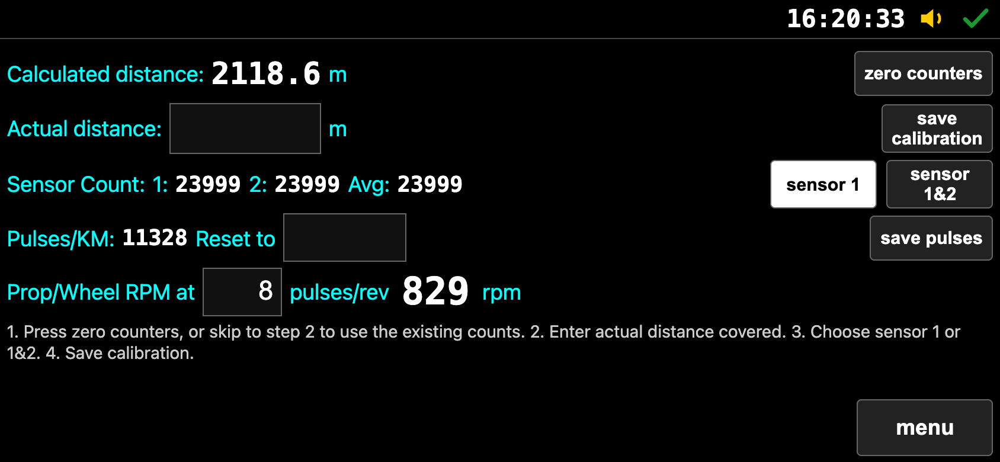
Beep Assist uses the to figures on the segments page as the roadbook boxes, so nothing more needs to be entered. It is switched on in settings.
Beep navigation: The box double-beeps a set distance before each roadbook box.
Beep timing: The box single-beeps at the time the car should pass each roadbook box. This reveals distance errors from wheel spin, corner cutting or a skipping sensor.
Beeps follow Total, so pressing +10, -10 or set moves them all.
The settings are:
What happens in italian instead:
next up to 2 seconds before the 0 still sounds that
beep for the row being left; pressed earlier, it is a plain skip with no beep.next is due.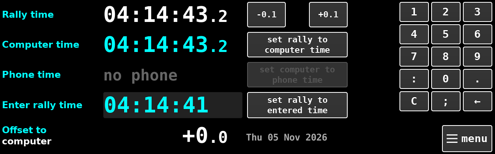
The page shows the following.
no phone when no phone is linked.+2.3. Beyond a minute it is shown as -11:49.2.set rally to computer time – sets the rally clock equal to the computer clock.set rally to entered time – type hh:mm:ss (or hh:mm; tenths
cannot be entered) in Enter rally time and then press the button. Today's date is used.set computer to phone time – sets the Pi's clock from the phone and leaves the rally
clock as it is. The button is greyed until a phone connects. The Pi needs its usual password-free
permission to set its clock. Without it the box shows The computer clock could not be set and
nothing changes.-0.1 and +0.1 trim the rally clock by a tenth of a second per press. Hold the
button to repeat. The change is saved immediately.
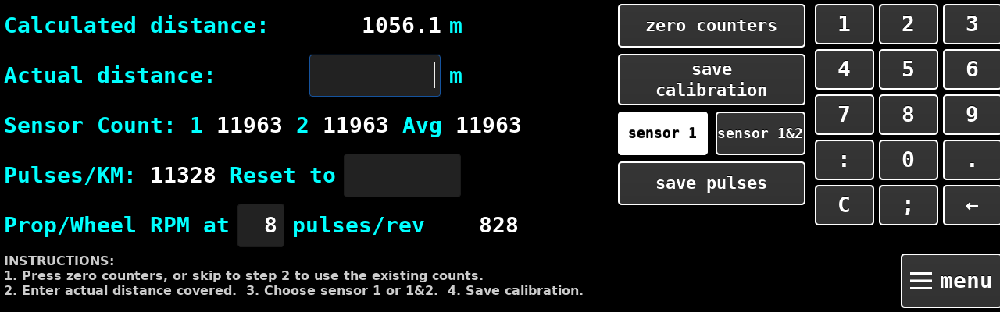
zero counters. (This step can be skipped, in which case the distance since the last
Total reset is used.)sensor 1 or sensor 1&2. The selected counter is shown in white.save calibration.The page shows the calculated distance, each sensor's count and the pulses per km in use. If the
distance is out of range, or nothing was counted, pressing save calibration does nothing and
no warning is given. Check that the pulses per km figure has changed.
If the pulses per km figure is already known, type it in Reset to and press save pulses.
No driving is needed. A figure of zero or less is ignored.
The last row shows the propshaft or wheel rpm from sensor 1. Type the sensor's pulses per revolution in the small box.
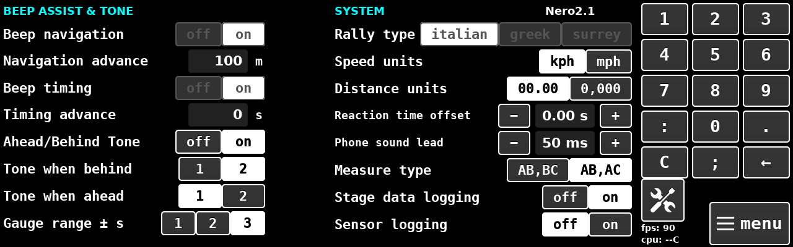
Each switch shows its current state lit. Changes are saved immediately.
next, the greek next speed, start now
when moving at 5 kph or more, and the surrey start and finish.±10, set or prev.next speed, the surrey start and a moving
start now, and only at 5 kph or more.start now does the same, and only when the sector opens on a
pc or pm.add distance. It does not change to
kilometres at 100 km.+10 / -10 keys read +.01 / -.01
and step 0.01 mile, and the calibration page takes its measured distance in miles. Beep assist distances
stay in metres.A-B, B-C zero key on the greek and surrey
navigation pages. AB,AC hides it.Both logs are deleted after 60 days (at program start) and can be downloaded on the phone's Set tab.
The spanner key (bottom left of the keypad) opens Setup. Under it are shown the screen update rate (fps) and the Pi's CPU temperature.
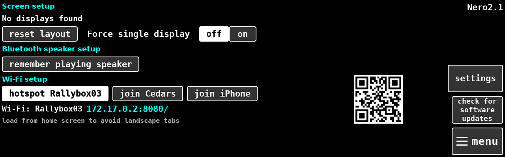
rotate key and a touch keyboard
switch for each. reset layout is also here. Force single display puts the gauge on the
co-pilot screen from the next program start.remember playing speaker stores the speaker that is
now playing. Use connect / disconnect for it later.check for software updates – closes the program and checks for an update
(internet is needed).settings – returns to the settings page.